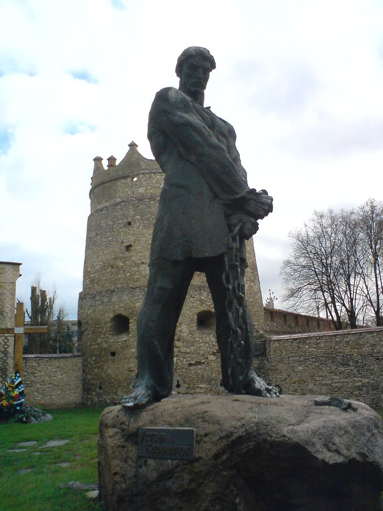

Життєпис
Народився в родині кріпака Якима Карманюка. Про ранній період життя відомо небагато, крім того, що він володів грамотою та достатньо розумів російську, польську мови та їдиш. У 17-річному віці його забрали до двору пана Андрія Пігловського (брацлавський ловчий). Хлопець був роботящий, але непокірний. Поміщик не міг пережити того, що його кріпак не дозволяв собою керувати, а тому вирішив позбутися його і 1812 року віддав на 25 років до царської армії. Проте 1813 року разом з Д. Хроньом Кармелюк утік із 4-го уланського полку (Української кінно-козацької дивізії), який розміщався в Кам'янці-Подільському, і повернувся в рідні місця, де очолив ватагу кріпаків і військових-дезертирів, що нападали на маєтки панів. Незабаром був спійманий і засуджений до 50 ударів батогом, після чого його запроторили до кримського штрафного батальйону. На шляху до Криму Кармалюк втік із-під варти.
1814 року очолив повстанський рух селян проти російської адміністрації і дворянства, який розгорнувся в Літинському, Летичівському й Ольгопільському повітах.
1817 року жандарми схопили Кармелюка. Його засудили до страти, замінивши її в останню мить 25 ударами батогом і 10 роками каторги в Сибіру. Та Кармалюк втік із В'ятської етапної в'язниці. Повернувшись на Поділля, продовжував боротьбу, доки його знову не схопили під час облави. Скориставшись знанням російської мови й відповідними документами, видавав себе під час слідства за солдата з Костроми. Витримка не зрадила його й тоді, коли слідчі привели рідних на очну ставку і до нього радісно кинувся його 8-річний син Остап.
Невдовзі після того, як його запроторили у Кам'янець-Подільську фортецю, він організував разом з іншими в'язнями свою четверту втечу. Однак його поранили і прикували до кам'яного стовпа у вежі Юлія II (Папській), яку згодом назвали Кармалюковою.
Взимку 1824 його покарали 101 ударом батога, затаврували розпеченим залізом і знову відправили етапом у Сибір. Два роки конвоювали Кармалюка разом з іншими каторжанами до Тобольська.
1825 року після етапу, що тривав понад рік, Кармелюк із Тобольської каторжної в'язниці потрапив у Ялуторовськ. Незабаром знову втік, був схоплений і запроторений у набагато гірші умови. Втеча звідси — один із найзнаменитіших документованих випадків. Восени, під час нічної бурі, Кармалюк виламав ґрати, зібрав сорочки всіх співкамерників і зв'язав їх у довге полотнище. До кінця прив'язав камінь і закинув за частокіл в'язниці. По цьому висячому мосту, прямо з вікна за огорожу один за одним перебралися усі в'язні — зранку камера була порожня
1828 року знову його спіймали через розгром загону урядовими військами в селі Кальна Деражня; до судової відповідальності було притягнуто 750 осіб; вирок Кармалюку — 101 удар батогами та довічна каторга, знову Сибір (Боровлянський скляний завод у Тобольській губернії), знову втеча.
1830 року — черговий арешт у Новій Синяві. Через два роки Кармелюк розібрав стелю у своїй камері й утік із Літинської в'язниці
1830–1835 роки — селянський рух під проводом Кармелюка охопив усе Поділля, суміжні з ним райони Бессарабії, Волині та Київщини. У ньому брали участь близько 20 тисяч селян, які здійснили понад 1000 нападів на поміщицькі маєтки
Протягом 23 років боротьби повстанські загони Кармелюка здійснили понад 1 тисячу нападів на поміщицькі маєтки. Захоплені у поміщиків гроші та майно роздавали селянській бідноті. Для боротьби з повстанцями російський уряд у листопаді 1833 р. створив так звану Галузинецьку комісію (в селі Галузинцях тепер Деражнянського району Хмельницької області) щодо заворушень у Літинському, Летичівському та Ольгопільському повітах Подільської губернії.
За словами тих, хто знав або бачив Кармелюка, Устим був не дуже високий, але плечистий, незвичайно сильний, дуже розумний лицар. Не любив грабіжників, сильно карав даремних злодіїв. Житель с. Гуменці Мисливський згадував, що одного разу Кармалюк відібрав багато золота у місцевого здирника і роздав бідним обідраним жінкам, що йшли по дорозі. На прощання сказав: «Беріть золото, хай діти ваші вдома не плачуть… Як мене десь вб'ють, споминайте Кармалюка…»
У повстанському русі брали участь не лише українці, а й поляки та євреї. Вихрест із євреїв Василь Добровольський довгі роки був найближчим сподвижником Кармалюка; поляки Ян і Олександр Глембоцькі, Фелікс Янковський та Олександр Витвицький до кінця життя були вірними товаришами Устима, як і євреї Аврум Ель Іцкович, Абрашко Дувидович Сокольницький, Арон Віняр. Всі вони на очних ставках і допитах ніколи не зрадили Кармалюка, за що були покарані і вивезені до Сибіру.
Кармелюка вбив із засідки шляхтич Рутковський. Стріляли, говорить переказ, не кулею, а срібним ґудзиком — тільки так можна убити характерника, тобто чаклуна, яким вважали отамана.
Тіло ватажка ще довго возили селами, щоб залякати селян. Поховали його в Летичеві (тепер Хмельницька область), де 1974 року на постаменті-валуні поставили 5-метровий пам'ятник.
Допитавши 2 700 осіб, урядова комісія встановила, що Кармелюк підняв на боротьбу 20 тисяч повстанців.
Історична оцінка
Образ Кармалюка зобразили у своїх творах Михайло Старицький, Марко Вовчок, Степан Васильченко, Василь Кучер та інші. Харківський композитор Валентин Костенко — автор опери «Кармелюк». Фольклорні добутки про народного героя збирали Микола Костомаров і Тарас Шевченко (останній назвав його «славним лицарем»). Народні чутки приписують Кармалюкові авторство ряду пісень. Хоча найвідоміша, «За Сибіром сонце сходить», складена усе-таки не ним, a Томашем Падурою. За твір про Устима Кармалюка письменниця Марко Вовчок в 1871 році, через 36 років після загибелі реального Кармалюка, потрапила в Петербурзі під суд. Той оштрафував її «за схвалення такого способу дій, який суперечить встановленим у нас засадам власності».
У Головчинцях резонанс справи Кармалюка був таким великим, що вся його численна рідня була змушена відмовитись від свого прізвища, аби не зазнавати репресій. Переважна більшість взяла собі прізвище Карман: таке було прізвисько соратників Устима. Після 1955 р., коли село перейменували на Кармалюкове, почався зворотний процес зміни прізвищ, майже всі Кармани стали Кармалюками.
До наших часів дійшов лише опис зовнішності Кармалюка, а єдиний імовірний його портрет належить пензлю Тропініна та відомий у кількох копіях, одна з яких зберігається в Ермітажі.
Є й інші, дещо критичні погляди на оцінку діяльності та образ Кармелюка. В деяких розвідках опублікована інша версія історії Устима Кармалюка, яка свідчить про те, що Кармалюк більшою мірою грабував саме селян, при чому ці напади не мали соціального чи повстанського характеру.
Вшанування пам'яті
Його іменем названо вулиці в ряді міст, зокрема:
- Вулиця Кармальківська — вулиця у рідному селі
- Вулиця Устима Кармалюка — вулиця у місті Жмеринка
- Вулиця Устима Кармалюка — вулиця у місті Житомир
- Вулиця Устима Кармелюка — вулиця в місті Хмельницький
- Вулиця Устима Кармелюка — вулиця в місті Кам'янець-Подільському
- Вулиця Кармелюка — вулиця в місті Івано-Франківську
- Вулиця Кармелюка — вулиця в місті Хмільнику Вінницької області
- Вулиця Кармелюка — вулиця в місті Чернівці
- Вулиця Устима Кармелюка — вулиця в місті Києві
- Вулиця Кармелюка — вулиця в місті Стрий Львівської області
- Вулиця Кармелюка — вулиця в місті Волочиськ
- Вулиця Кармелюка — вулиця в місті Сміла
- Вулиця Кармелюка — вулиця в місті Калинівка Вінницької області
- Вулиця Кармелюка — вулиця в місті Полтава
- Вулиця Кармелюка — вулиця в місті Суми
- Вулиця Устима Кармелюка — вулиця в місті Іллінці
- Вулиця Кармелюка —вулиця в місті Ужгород.